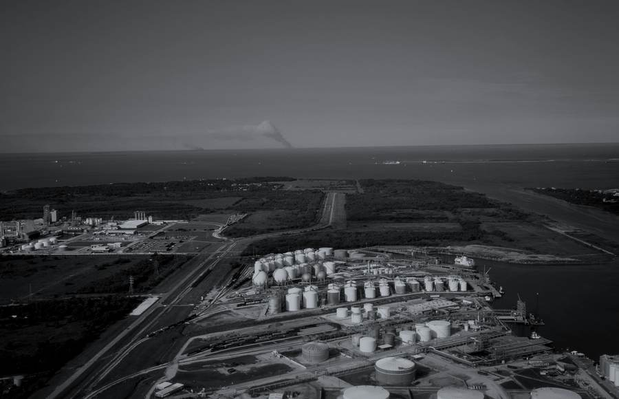

Anyone can assert a photograph is real. We can show our working.
Generative tools can now produce a convincing image of a real place. So every file entering a Cribyn case room is put through the same four steps, and the result is recorded against the evidence — not asserted in a covering note.
Step one
Sealed on arrival
The file is hashed and encrypted at rest the moment it reaches the case room, with an immutable record of who put it there.
Step two
What it says of itself
Content Credentials, capture metadata, editing history, and any declaration that a generative model made or altered it.
Step three
Asked of others
Where an image claims a place, independent sources are queried for the same coordinates — including satellite radar, which is far harder to fabricate than a picture.
Step four
Recorded, not claimed
The finding attaches to the exhibit and travels with the report, so the position can be examined rather than taken on trust.
A worked exhibit
Exhibit 04 · Is this facility real and operating? · Houston Ship Channel
Corroborated

What we were given
A photograph from the counterparty. Geotagged, undated, offered as proof the site is operating.
What the satellite saw
Sentinel-1 radar · same coordinates · not a photograph
Green outlinesmark what the analyst identified in the radar and matched to the photograph · bright = built structure · dark = water
The radar image is not a photograph. The satellite sends a signal down and records what bounces back: hard, built things return brightly, water returns almost nothing. That cannot be faked with an image tool, which is why it is the second opinion we reach for first. Illustrative example, assembled from open data: aerial photograph public domain (Carol M. Highsmith, Library of Congress); radar contains modified Copernicus Sentinel data 2026.
In practice
A counterparty supplies photographs of a facility to evidence capacity ahead of a transaction. The images are geotagged and undated.
Where a file carries no provenance at all, we say so and treat it as unverified. Silence is a finding too, and reporting it plainly is the point.
We are not asked whether a photograph looks convincing. We are asked what can be established — and what cannot.
This is provenance analysis, not pixel forensics. Absence of metadata is reported as unknown origin — messaging platforms and content systems strip it routinely — and is never presented as evidence of tampering.